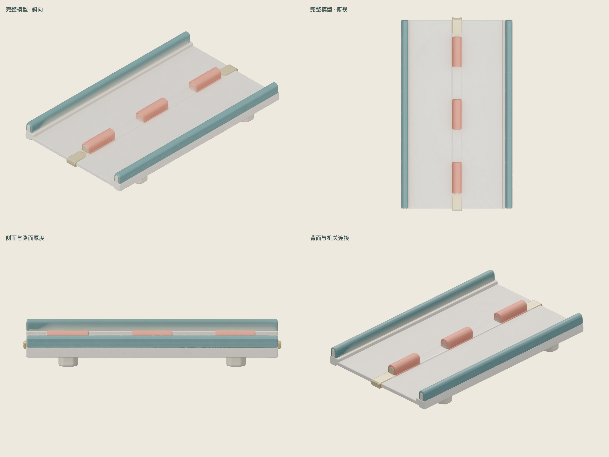
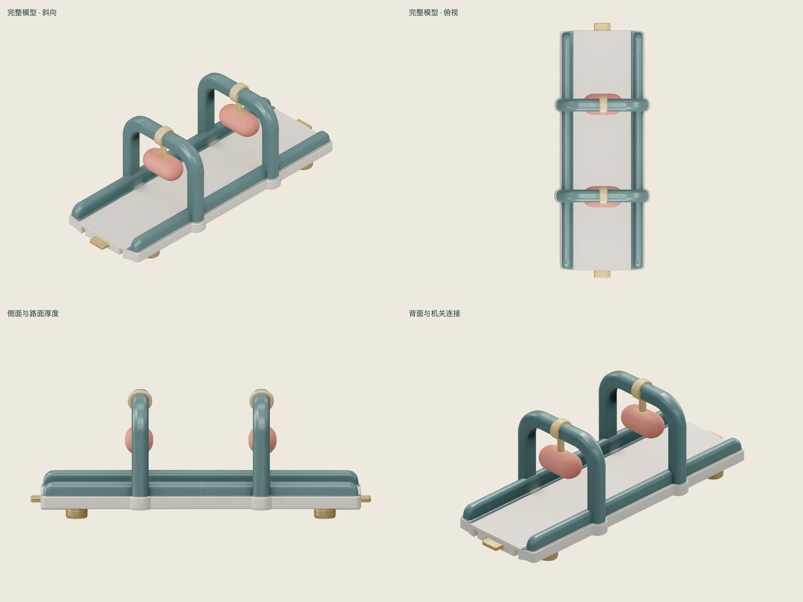
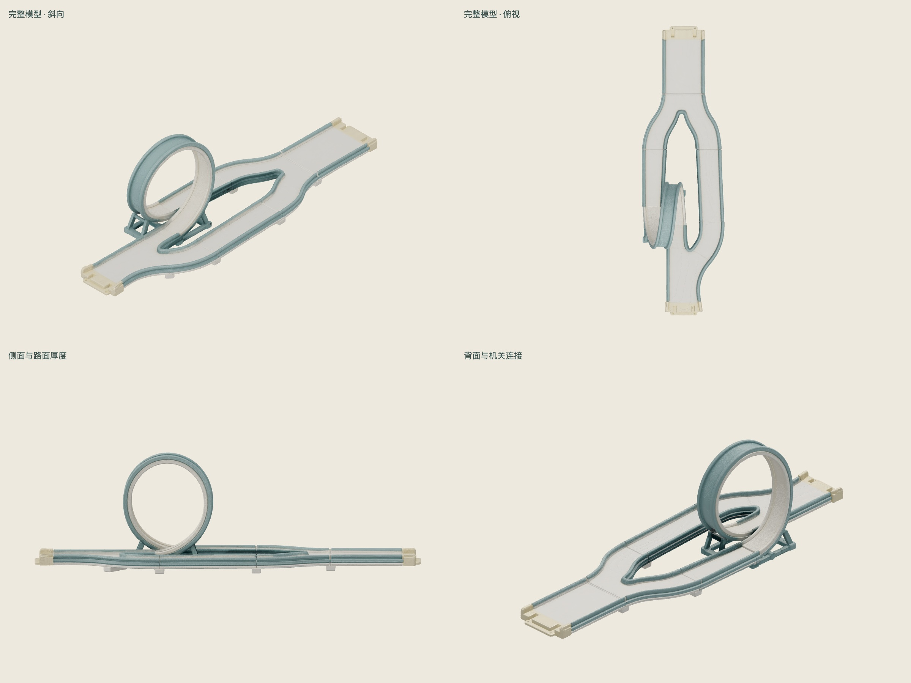

三个 GLB 已生成并完成静态检查；合计 153 积分。外观方向可继续探索，整段模型均未批准直接游戏接入，尚未完成碰撞与通关验证。
路面和统一风格可辨认；但要求六块错位障碍，结果只有三块，且基本排在中线，未保留原定绕行节奏。 需重新布置障碍并重做准确路面。
Hi3D 模型查看 · 下载原始 GLB · 检查记录 · 参考图

1,929,264 三角面 · 44.6 MiB · 单网格 · 无动画
两只摆锤和支架外观保留；生成结果没有可单独驱动的锤头、摆臂或转轴节点。 需拆分/重建机关、设置转轴和动画。
Hi3D 模型查看 · 下载原始 GLB · 检查记录 · 参考图

1,953,630 三角面 · 45.1 MiB · 单网格 · 无动画
回环、平缓备选路和分合流轮廓存在；尚未验证回环曲面和分支碰撞是否能支撑实际运动。 需精确重建路面和碰撞，进行动力学验证。
Hi3D 模型查看 · 下载原始 GLB · 检查记录 · 参考图

1,973,000 三角面 · 45.6 MiB · 单网格 · 无动画